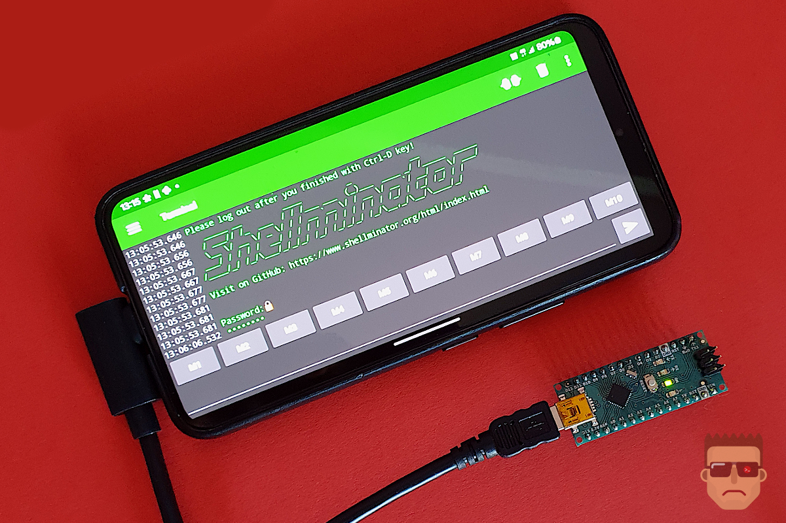

Not only does it run on almost every microcontroller, but you can interact with it from virtually any platform.
Use it on your Mac, Windows PC, Linux machine, or even directly in your browser. Got an Android device with USB upstream support?
Plug it in, and you’re good to go! All you need is a terminal emulator, and boom—you’re up and running.
Since the terminal messages are standardized, you can literally use it from anywhere, with anything. The best part? You can finally say goodbye to the Arduino IDE’s Serial Monitor and enjoy almost PC-level terminal functionality—even on a microcontroller that costs less than 50 cents!
One important thing to note: the terminal itself always runs on the microcontroller, while the terminal emulator on your host device is just for display.
We’ve tested it on smartwatches, TVs, phones—you name it. If it has a browser or a serial port, it can interface with Shellminator.
If you manage to get it running on something ridiculous (like a smart fridge, a satellite, or even a toothbrush…), don’t hesitate—share your success with us in the Show and Tell section! 🚀